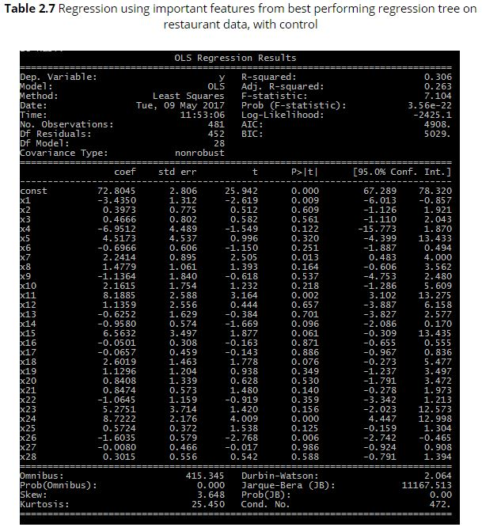
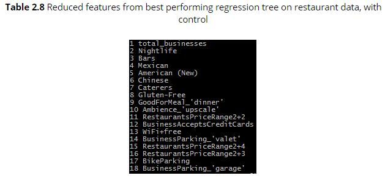
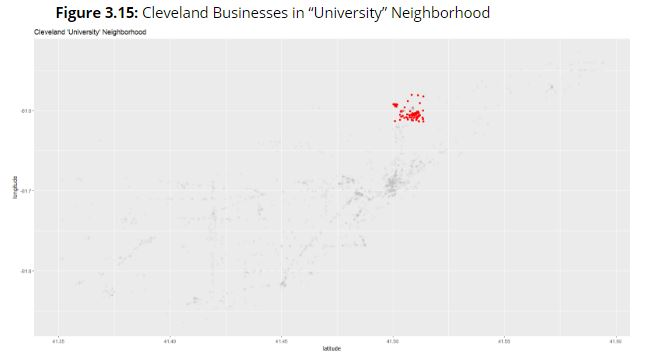
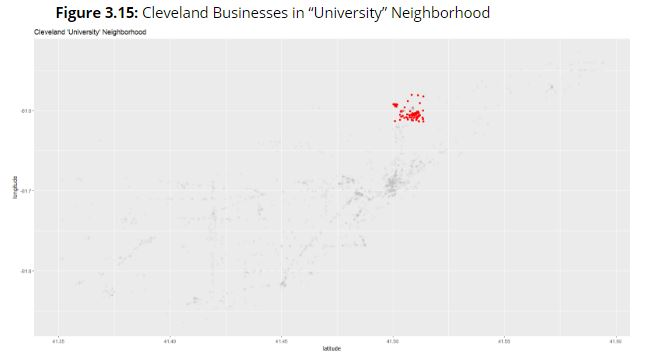
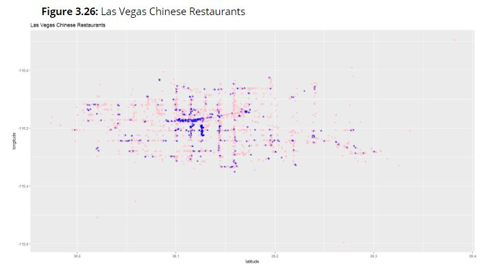
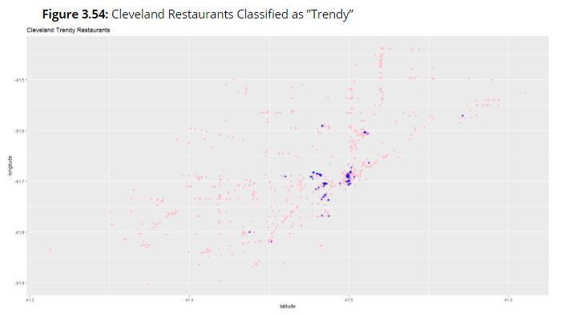

Using Business Data to
Assess Characteristics of Urban Environments
Research conducted by Jaclyn Zhong, Reena Zhan, and Tiffany Chen
1: What do city residents value in businesses?
How friendly are New Yorkers compared to individuals living in San Francisco? Do people in Pittsburgh value time and efficiency as much as residents in Las Vegas? While there certainly exist commonalities and unifying characteristics across cities, there also exist distinguishing traits that are unique to any given city. Additionally, the cultural atmosphere of a city relies in large part on its residents, meaning that the success of a business may vary across cities and geographical locations, depending on the degree of importance residents place on a given business trait.
The first portion of our research seeks to understand how we can use aggregated review data to identify traits that make a business successful or unsuccessful within its specific geographical region. We will limit our scope to a state-by-state basis with the USA, using curated review data from Yelp.
Procedure
After data wrangling, we will split our procedure into two different parts: the first section will set out to make more observatory analyses of the given data, while the second section uses the data to begin training a predictive model to generate insight if we were given more review data in the future.
Phase 0: Data Wrangling
We begin by converting the review data from JSON into a CSV file, using the list of businesses provided to also relate a review to the location it was written for, and separating all the review data into CSV’s of review data based on state in the US.
In preparation for data analysis, we also removed reviews with associated ratings of 3 (out of 5) stars, as they were considered neutral (and thus unnecessary) for our analyses. The following table shows the final number of reviews tied to each US state that was provided to us within the whole dataset.
Table 1.1: Number of 1, 2, 4, 5 star reviews for US states| STATE | # REVIEWS |
| VT | 4 |
| AZ | 1265915 |
| WI | 88778 |
| NV | 1460806 |
| OH | 190786 |
| NC | 233703 |
| SC | 7379 |
| PA | 179774 |
| IL | 29874 |
| NY | 99 |
Phase 1: Observatory analyses
We begin by assessing the polarity and subjectivity of reviews based on their textual content. We define polarity as the expressed opinion in a document (i.e. positive, negative, or neutral) and subjectivity as the overall individual feeling / experience that is embodied within the text.
Using Python TextBlob, we ran sentiment analyses to obtain polarity and subjectivity scores for 1) all positive / negative reviews together, 2) positive reviews only, and 3) negative reviews only for each state listed in Table 1.1.
From there, we also extract subsets of a maximum of 10,000 words from all the reviews within a given state to obtain word-count tables containing the top 100 words with highest frequencies (excluding filler / meaningless words).
We attach the table with highest frequency words for each state as Appendix A.
Phase 2: Model training / prediction
We then proceed to train a model using big data to predict the average number of stars based on the textual content of a review. In this model, we use an iterative stochastic gradient ascent on randomized subsets of our data to obtain an optimized model. We use a gradient ascent rather than a descent because we use a logistic regression to maximize our likelihood function rather than minimize our loss function.
More specifically, in Python we create an iterator which loops through subsets of review data of size 1000 and clean the review text through tokenizing and stemming the words in reviews, which are then passed to a hashing vectorizer so as to match words with different suffixes but similar meanings / intentions.
Then, using the hashing vectorizer along with a bag of words model containing negative and positive sentiment-associated words, we loop through the review iterator to train our model on the subset data.
We then plot our accuracy in predicting review ratings as a function of the iteration they are on (we omit several states’ individual accuracies because the number of reviews they had wasn’t enough to train a full model):
Key Findings
Based on our data analyses, we observe three key findings:
- 1: Positive and negative rating reviews can easily be distinguished by their polarity While intuitively this is exactly what we had anticipated, the differences in average polarity of negative versus positive reviews were unexpectedly significant (see Table 1.3). As a result, we observe that a first-pass NLP approach for sentiment analysis is extremely effective at distinguishing between reviews that are positive and reviews that are negative, and that these NLP characteristics are in line with the ultimate rating that the reviewer gave to the business. Table 1.3: Averaged Sentiments Across Reviews
- 2: The content and structure / composition of a review varies significantly depending on ratings Based on the word frequency tables obtained by state (see Appendix A), a heuristic analysis showed a consistent pattern across reviews that were negative (1, 2 stars) or positive (4, 5 stars). It was found that positive reviews included more frequent usages of adjectives, which were either used to describe people (i.e. “friendly”, “awesome”, “amazing”) or to describe food (“delicious”, “cheap”, etc.). On the other hand, negative reviews had an unexpectedly high frequency of nouns, specifically referencing people (i.e. “staff”, “waiter”, “manager”, “waitress”, “customer”, etc.). In addition to mentions of people and human interactions, other aspects of businesses that surfaced in the frequency tables included money (“expensive”, “price”) and location (“area”, “location”, “parking”).
- 3: Some states culturally seem to have more demonstrative / indicative reviews of their feelings about food; we can predict the rating given by a review according to its text description with a relatively high accuracy While the accuracy for our SGD model was approximately 78% (Figure 1.3) when trained with review data from all our given states, selectively training our model state by state (i.e. Figures 1.4 - 1.6) showed that in some cases, there was approximately a 10% increase in model accuracy, which implies that reviews in certain states offer more insight via positive / negative sentiment into the ultimate review rating.
| Total | Negative | Positive | |
| Polarity | 0.237641 | 0.00839374444 | 0.3240234444 |
| Subjectivity | 0.56574 | 0.519134 | 0.57551822 |
Implications
Overall, our findings suggest potential ways to increase both new and veteran businesses’ success in Yelp ratings.
For businesses owners who are considering opening up shop in a particular state, they will now have a better idea of which areas of their business to strengthen in preparation for opening day (i.e. better customer service, cutting costs in order to reduce menu prices, etc.); for business owners who are considering expanding to a new geographical area, the research findings provide a good way of gauging whether there exists a synergy between the existing business’ strengths and the needs of their new customer base.
For businesses who want a better idea of their performance relative to their competitors, being able to analyze more data than simply the average star rating will provide a more nuanced insight into why their business is performing worse relative to others, and which exact features of their business they can focus on so as to intentionally target an increase in their average review rating.
Extensions
Finally, we end this portion of our research by noting several improvements that can be made to our current procedure, given longer periods of time and more detailed data. Firstly, it seems likely that there may be varying tendencies / habits in giving ratings across different user demographics and geographical locations. For example, it is possible that older people are more likely to write a positive review than an individual in their early 20s. Perhaps New Yorkers have higher standards and are more frugal with handing out 5 stars. As a result, if we had been given more extensive user data and been able to observe users’ habits across different businesses, we could expect that normalizing our data would improve the accuracy of our model.
Additionally, had we been given more data across more states, it would have made sense to also run a sentiment analysis across different regions of the US (i.e. Northeast, Midwest, etc.) to observe review behaviors on a more macro, regional level than simply by state.
2: Are attributes of area businesses predictive of average socioeconomic status in an area?
We now move to an exploration of how data from the Yelp Dataset Challenge can predict the wealth level of people living particular areas. For this part of the project, we were interested in identifying features of businesses that were in some sense suggestive of the socioeconomic landscape of a particular area or neighborhood. We hypothesized, for example, that areas with a higher number of restaurants that are ‘upscale’ or expensive would tend to be areas where the residents have higher income. Similarly, we hypothesized that areas with more inexpensive restaurants would tend to be areas where the residents have lower income levels. Our objective in this part of the project was to assess how exactly how predictive the business data could be of socioeconomic status of particular locations.
Procedure
Obtaining socioeconomic status information
Our first step was to find a secondary data source that would indicate socioeconomic status of a particular area. We ended up using tax data from the IRS, which supplied adjusted gross income (AGI) data segmented by zip code and income bracket. We used the most recent data set (from 2014) and did some cleaning and data aggregation in order to produce a CSV with the following information: zip code | state | average adjusted gross income. For our purposes, we excluded information for all zip codes except those of cities which were in the Yelp dataset.
While doing this, we noted the following particularities of this data set:
- - The data probably overestimates income levels since many people are not required by federal law to file tax returns because they do not make enough money. We do not believe this had a significant effect on the results we describe below.
- - The data was segmented by both zip code and income bracket, so we extrapolated from the number of returns information and took a weighted average to get an estimate of average AGI by zip code.
- - Trimmed the data set to American businesses (since we only had income information for the U.S.).
- - Matched businesses to their average AGI using the information generated in the previous step.
- - Created binary features on the category information. The categories are along the lines of the following:
- - Beauty & Spas
- - Health & Medical
- - Nightlife
- - Arts & Entertainment
- - Etc.
- total_businesses ***
- Nightlife *
- American (New) **
- Gluten-Free ***
- Ambience_'upscale' *
- RestaurantsPriceRange2+2 *
- BusinessAcceptsCreditCards ***
- BusinessParking_'valet' **
- RestaurantsPriceRange2+3 ***
- BikeParking **
- BusinessParking_'garage' ***
Wrangling business data
We also parsed and processed the business data as follows:
Predicting wealth of business’ neighborhood using regression trees
As a first attempt to tackle our research question, we used regression trees to predict the wealth of a particular business’ location (determined by zip code), using category information as features. We tuned the regression tree by varying the maximum number of features examined to determine each split and by varying the depth of the tree, and we noticed that this did seem to improve our results.
We split the data into a training set (80%) and a testing set (20%). (This step was also done for the other regression tree/gradient boosted regression tree models we generated.) The results of this first round of prediction are below:
Table 2.1 Predicting business area wealth by business characteristics — regression tree MSE values by max features examined per split and max tree depth
|
x |
feat=.1 |
feat=.2 |
feat=.3 |
feat=.4 |
|
depth=2 |
2127.38756699 |
2121.66437611 |
2122.67506738 |
2112.8490354 |
|
depth=4 |
2109.25540175 |
2106.00052076 |
2103.62800319 |
2102.98962337 |
|
depth=6 |
2106.7270169 |
2093.65241749 |
2088.41843785 |
2092.31124289 |
Even with the most optimal set of parameters, however, we noticed that the MSE values were still very high. (They are reported above in thousands of dollars.)
Predicting wealth of business’ neighborhood using gradient boosted regression trees
Our next approach was to use gradient boosted regression trees; we hoped that this would improve the predictive power of the model. Analogous results to those presented for the regression trees are presented below:
Table 2.2 Predicting business area wealth by business characteristics — gradient boosted regression tree MSE values by max features examined per split and max tree depth
|
x |
feat=.1 |
feat=.2 |
feat=.3 |
feat=.4 |
|
depth=2 |
2071.69089944 |
2068.95690973 |
2069.50609851 |
2068.48800992 |
|
depth=4 |
2055.30749086 |
2052.90528437 |
2051.90428652 |
2051.74584601 |
|
depth=6 |
2046.58963345 |
2045.63039901 |
2043.01621297 |
2044.72819485 |
Still, we observed that MSE values were high, even with the most optimal set of parameters, as we can see from the above table.
Reducing business data set to restaurants in order to add more features
We suspected that the data set we were working with was lacking in features, so our next step was to enrich the set with more features. The natural next place to look for features in our data set was in the attributes field, since we had already exhausted all of the category information. However, we noticed that attributes were only indicated for businesses that are restaurants, so we decided to narrow our focus exclusively to restaurants in the dataset.
We then parsed and binarized the attribute information. (This was non-trivial since the attribute information is much richer than the category information. While category information is just a list of categories, attribute information is nested on multiple levels and each attribute key can take on several different types of values rather than just binary values.
We ran the restaurant data through the gradient boosted regression tree model and obtained the following results:
Table 2.3 Predicting restaurant area wealth by restaurant characteristics — gradient boosted regression tree MSE values by max features examined per split and max tree depth
|
x |
feat=.1 |
feat=.2 |
feat=.3 |
feat=.4 |
|
depth=2 |
2112.34324877 |
2105.05695268 |
2118.50388279 |
2098.7166738 |
|
depth=4 |
2072.40706255 |
2067.64289723 |
2067.23118337 |
2060.12189132 |
|
depth=6 |
2065.75468912 |
2050.02884825 |
2046.44203703 |
2051.93046732 |
Since the MSE measures remained high across the board, we decided to move to a different model to examine the problem of predicting socioeconomic wealth using business data.
Gathering insights from regression tree/gradient boosted regression tree
We decided that an appropriate next step would be to “flip” the model and predict the wealth of an area based on the businesses in the area. We wanted to run an OLS regression to do this, but it was not immediately clear how to aggregate the business data into an appropriate format for OLS regression. We looked to the previous regression tree models for indications of what regressors might be appropriate. We looked at the best-performing regression tree, which we include as an attachment. (TODO!!!)
From the tree, we looked at features which split the data at a particular node into two sizeable groups rather than splitting so that one group has only a few data points: we thought that these features were indicative of larger trends in the whole data set rather than smaller particularities of the sample that we have. This set of features is below:
Predicting wealth of zip code based on restaurant data using OLS regression
We parsed the restaurant data used for the regression trees, aggregating by zip code on the key features identified in the previous step. That is, for each zip code, we calculated how many restaurants satisfied each of the above characteristics. Each of these counts was then a regressor in our first OLS model. We include the results for this regression below:
We then added a ‘total_businesses’ regressor to control for the effects of having a high number of businesses in general in a particular zip code, which yielded the following regressors and results.
We observed that, while a number of the coefficients in the regression above were statistically significant, many were not. In an effort to simplify the regression, we removed all the regressors whose associated p-value were greater than .50. This left us with the following regressors and corresponding OLS regression results:
We observed that, while a number of the coefficients in the regression above were statistically significant, many were not. In an effort to simplify the regression, we removed all the regressors whose associated p-value were greater than .50. This left us with the following regressors and corresponding OLS regression results:
Key Findings
The first major finding of this part of the project was that regression trees and variants of regression trees were not particularly predictive of socioeconomic status of an area based solely on attributes of a particular restaurant in that area. Despite significant tuning done on the trees and the use of a boosted model, we found that MSE values continued to be high. We suspect that this is because the information embedded in the attributes of just one restaurant in an area is insufficient to predict socioeconomic status of the area associated with the restaurant’s zip code. This makes sense, since there are many types of businesses that will operate in a variety of different types of areas. For example, fast food places are likely found in areas with relatively high and relatively low income levels. However, we hypothesized that they would probably be found at a lower frequency in high-income areas, and this hypothesis led us to move to a regression of area income on number of businesses satisfying particular criteria in the area.
Moving to the OLS regression model, we observed that certain features seem key in predicting socioeconomic status of particular areas. While some of these features (Ambience_’upscale’, RestaurantsPriceRange2+3, and BusinessParking_’valet’ for example) were along the lines of what we would have predicted, others were initially surprising. In particular, we thought it was interesting that the number of gluten-free places was high significant in the regression.
Among the regressors used in the reduced regression with control, the coefficients on the following regressors were statistically significant:
(* indicates 90% level, ** indicates 95% level, and *** indicates 99% level). In addition, we noted that the R-squared value of the reduced regression with control is around .302, so the regressors we had explained a non-trivial part of the variation in income across zip code areas. This was a noticeable improvement from the regression tree model we were previously using.
Lastly, we noted that the R-squared value did not significantly change between the full feature set and the reduced feature set, which makes us relatively confident about removing some of the the less illustrative features in order to simplify the regression.
Implications
This part of our research project indicates a great deal of potential in using business data to observe larger socioeconomic trends. Though the dataset we were using was somewhat limited for our purposes (i.e., we only had seven American cities from which to generate data and draw conclusions), we were able to generate a model that explains a noticeable portion of the variation in wealth across areas using just the attributes of businesses in those areas. This indicates high potential for creating even more predictive models with a fuller data set.
On a more philosophical level, this finding suggests that basic characteristics of businesses in an area are correlated with measures of socioeconomic status. We suspect that these models would easily extend to predicting other demographic factors, like the average age of an area or the average level of education. Therefore, it could be interesting to obtain such data at a neighborhood, zip code, or city level and see whether the business data is predictive.
Extensions
We noticed that the dataset has information about particular neighborhoods of cities, in addition to zip code-level and city-level data. We think one relatively straightforward extension would involve getting more fine-grained income data and running the same regression with this data.
Another extension of interest would involve processing review data to pick up keywords in the review (for example, pricey, expensive, etc.). We did not do this because the review data provided for the Yelp Data Challenge did not provide enough reviews for the subset of data we were examining.
Lastly, if we were able to obtain time-segmented data (i.e. snapshots of the businesses in an area over time and income-related information over a period of time), it would be interesting to examine patterns of gentrification and urban development over time in different areas.
3: How can we use business and review data to predict traits about a city and its neighborhoods?
We want to determine what business traits help to distinguish one neighborhood from another in a specific city and what neighborhood traits are generalizable across different cities. For example, can we identify where Chinatown is in a specific city by only using the business and review data? Can we find the university areas or the hospital districts?
Procedure
Filtering Data
- Business Data
- Las Vegas, NV
- Charlotte, NC
- Pittsburgh, PA
- Madison, WI
- Cleveland , OH
- Review Data
We filtered the data for the businesses located in the 7 U.S. cities listed in the Yelp documentation. However, Phoenix and Urbana-Champaign do not have any neighborhood data. Thus the following 5 cities were used:
We filtered the review data for only the reviews corresponding to the businesses in the 5 cities listed above.
Creating Neighborhood Maps
For each of the 5 cities, roughly 20-35% of the businesses do not have anything listed for the neighborhood field. We looked at three approaches for how to fill in these neighborhoods.
- For each business that had an empty neighborhood field, find the closest neighboring business in the same postal code that has a neighborhood listed. Fill in the current business with this neighborhood. The closest neighbor was calculated using the Euclidean distance of the latitude and longitude.
- Find the neighborhood that has the highest frequency among all the businesses with neighborhood labels in the same postal code. Complete the empty field with this neighborhood.
- The same as Approach #2 with an additional requirement that the top neighborhood must appear for at least 5 businesses in the same postal code. Otherwise, leave the neighborhood field of the current business blank.
We chose to fill in the blank neighborhoods using the third approach. While this approach left more businesses with an empty neighborhood, it still managed to fill in most of the blanks. The other two approaches demonstrated more error. This is because there exist some outliers in the data that are actually located far away from the neighborhood they are labelled with. As a result, they associate their neighborhood label with the postal code they are in. Thus, the threshold number of businesses with the same neighborhood in Approach #3 as it prevents a large group of businesses from being classified as a certain neighborhood when that neighborhood is actually located in another part of the city.
Below are the neighborhood maps for each of the 5 cities. We also highlighted key neighborhoods in each city that we think are of particular interest. We wanted to see what distinctive characteristics these neighborhoods have, if any. We also wanted to see if we could identify these neighborhoods from the data, using only business traits.
City: Las Vegas
Key Neighborhoods: The Strip, Chinatown, Downtown, University
City: Charlotte
Key Neighborhoods: University City

City: Pittsburgh
Key Neighborhoods: Downtown
City: Madison
Key Neighborhoods: South Campus
City: Cleveland
Key Neighborhoods: Chinatown, Little Italy, University
 

Extracting Business Features
Next, we extracted certain features from the business data that we hypothesized could have an impact in distinguishing certain neighborhoods from each others.
-
Business Attributes
- Price Range: 1, 2, 3, or 4 $’s
- Parking type: garage, street, validated, lot, valet
- Ambiance: romantic, intimate, classy, hipster, divey, touristy, trendy, upscale, casual
- Good for: kids, groups
- Outdoor Seating
- Casual Attire
- Open Hours: 7 days a week, weekdays only
-
Categories
- Shopping
- Nightlife
- Grocery
- Restaurants
- Italian
- Chinese
- Beauty & Spas
- Health & Medical
- Coffee & Tea + Cafes
- Education
- Arts & Entertainment
Our initial observations showed that some of these characteristics in the business data were not well documented. This was especially present in the “ambiance” features, where few of the businesses were tagged with any of these features. Thus, we parsed through the data for certain keywords to add as features to our businesses. To classify as each keyword/feature, the business in question needs to contain at least three reviews containing that keyword. We chose this threshold because it was a rough average of the number of reviews containing each feature across businesses that had any reviews containing the keyword.
- Busy
- Downtown
- Chinese
- Italian
- Classy, upscale
- Hipster
- Trendy
- Expensive,pricey,overpriced
- Inexpensive,cheap
- Comfort,casual
Generating Maps
We then generated maps showing the distribution of these features across each of the cities and compared with the same maps of other cities and the original neighborhood maps. For some of the features, we chose to only map out the restaurants because some of the subjective attributes, especially the ambiance ones, appeared very infrequently for businesses that were not restaurants.
Key Findings
Las Vegas
Price Range: Las Vegas appears to have quite a few expensive (3 or 4 $’s) businesses. These businesses appear to be be concentrated in “The Strip” area.
Restaurants Price Range: Upon closer look at just the 3-4$ restaurants, we can see that most of them are indeed in that area.
Valet Parking: A large of the businesses that offer valet parking are also located in that area, which makes sense due to the large number of hotels, casinos, and other attractions present there.
Downtown: The “downtown” keyword in the reviews has identified many businesses that are located in “The Strip” area as being in the “Downtown” neighborhood. This is perhaps indicative of the perception of where downtown is in Las Vegas, as the Strip is a large hub of activity, but technically is not the downtown neighborhood.
Nightlife: There is a lot of nightlife on the Strip but nightlife is also present throughout the rest of the city. This makes sense, since Las Vegas is known for its nightlife.
Arts and Entertainment: Similarly, there is a lot of Arts & Entertainment in the city, especially on the Strip.
Busy: Many of the businesses in Las Vegas are labelled as busy, likely because it is such a popular tourist destination.
Expensive, overpriced : Many businesses, on the Strip, but also elsewhere in the city are labelled as expensive or overpriced, based on their reviews.
Classy/upscale, trendy: A large majority of the businesses that are classified as classy, upscale, or trendy are located on the strip.
Chinese Restaurants: Although Las Vegas does have a Chinatown neighborhood, there are chinese restaurants all over the city. The Chinese restaurants do appear to be more concentrated in the Chinatown area.
Charlotte
Price Range: The price range breakdown of businesses in Charlotte shows that there are a lot fewer expensive businesses compared to Las Vegas
Restaurants Price Range: Likewise, there are a lot fewer 3 and 4 $s restaurants.
Valet Parking: Furthermore, very few businesses in Charlotte offer valet parking.
Downtown: Even though Charlotte does not have an official downtown neighborhood, the businesses that are classified as downtown through the reviews are all clustered in one area

Trendy: The businesses that are classified as trendy are located close to the downtown that was identified through the reviews.
Classy / upscale: Many of the classy/upscale businesses are also located “downtown”. Compared to Las Vegas, there are much fewer of these restaurants.
Pittsburgh
Price Range: TThe prices range breakdown of businesses in Pittsburgh shows that there are not too many expensive businesses in the city.
Restaurants Price Range: Many of the more expensive restaurants in Pittsburgh seem to be clustered in the center of the city.
Valet Parking: Like with Charlotte, there are not many businesses in Pittsburgh that offer Valet Parking
Downtown: The clustered area that represents the businesses in Pittsburgh that are located “downtown” based on their reviews, matches up very well with the actual downtown neighborhood in Pittsburgh (Figure 3.9).
Arts and Entertainment: Most businesses that fall in the Arts & Entertainment category are located in or close to downtown.
Hipster / Trendy: The businesses that are hipster or trendy are located in the same area that is close to the downtown neighborhood.
Madison
Price Range: Madison also has few expensive businesses.
Restaurants Price Range: The few expensive restaurants are clustered together.
Valet Parking: There are almost no businesses in Madison that offer valet parking.
Downtown: Again, there is a clustering of businesses that have downtown mentioned in their reviews.
Classy / upscale: There are few classy or upscale restaurants and they are located close to this “downtown”.
Casual / comfort: Many of the restaurants in Madison have an ambiance of casual or comfort. There are few restaurants that are neither of these two.

Cleveland
Price Range: Cleveland’s price range breakdown is similar to most of the other cities, with few expensive businesses.
Restaurants Price Range: All the expensive restaurants are clustered in the center of the city.
Valet Parking: The few businesses that offer parking are clustered together, in the same area as the expensive restaurants.
Downtown: The area of the city that has been classified as “downtown” based on the reviews overlaps with the area with expensive restaurants
Busy: Businesses that are busy exist throughout the city, but many of them are close to or in this downtown area.
Arts and Entertainment: Most of the Arts & Entertainment businesses are also located in this area.
Expensive/pricey/overpriced,classy/upscale, trendy : The restaurants that are expensive/pricey are the same or in the same area as the restaurants that are classy and/or trendy.
Chinese: The chinese restaurants seem to be spread out over the city. They are not clustered around Chinatown.
Italian: The italian restaurants are also spread out and are not clustered around Little Italy.
Implications
Based on the maps generated, we can make a number of conclusions that are related to the neighborhoods of a city and are generalizable to different cities.
1: We can use the data to predict where downtown is in a city. This area will likely also have a cluster of arts & entertainment and nightlife. It will also contain many businesses that can be classified as “busy”.
2: It is difficult to use the data to find neighborhoods like Chinatown and Little Italy. This is because while there may be a high concentration of chinese and italian restaurants in Chinatown and Little Italy, respectively, there are also many other chinese and italian restaurants throughout the rest of the city. Thus, especially in a city that may be densely populated with many businesses, it is difficult to see where the clustering of restaurants occurs.
3: Most cities have a breakdown of price ranges where the majority of businesses are either “$” or “$$”. Of the “$$$” and “$$$$” businesses, most of them are located in the same area, that often corresponds with downtown. Wherever these expensive restaurants are located, the valet parking of a city is also located there. Additionally, the space occupied by trendy, upscale, and pricey restaurants also overlaps with them.
There were also a couple findings that were city-specific. Rather than telling us about specific neighborhoods in a city, they tell us more about the city as a whole.
1: We can see the general street makeup of a city from the map of its businesses. For example, Las Vegas streets, with the exception of the Strip, form a grid. Meanwhile, Charlotte and Pittsburgh appear less rigid, with curved roads and a couple major roads/highways going through the city.
2: We can also glean some insights about the physical geography of a city. There is a large area near the center of the map of Madison. This implies that there is some reason the city was formed this way, with no businesses in that area, such as elevation or a body of water. In fact, there is a lake in the middle of the city of Madison.
3: We can also see the spread of a city from its maps. Las Vegas is much more dense than some of the other cities. This makes sense it is a tourist destination with many businesses that want to be as close to the Strip as possible. This is also present in many of the feature maps because rather than having businesses of a certain feature all clustered together, they were all over the city. For example arts & entertainment businesses show up all over the city, where for many of the other cities, they are clustered closer to the downtown area. The maps for the other cities also appear to be more suburban and less densely packed because there is more space between the different businesses.
Extensions
With more time and, a logical extension to this process is to refine the preciseness of the analysis. With the current mapping of businesses based on their features, it can be difficult to determine if a cluster of businesses only occurs because that area of the city is more densely populated overall with businesses of all types. To combat this problem, we can create some sort of normalization factor using the density of the identified businesses of a certain feature in a specific area, such as postal code, and comparing it to the overall density of all businesses in the same area. Thus, the neighborhood and feature maps are a first step in determining which characteristics, businesses, and neighborhoods to examine further.
Another takeaway from this is looking at how Yelp can improve their website to be more indicative of businesses and their features. As mentioned earlier, some of the business characteristics, especially the ambiance features are very sparsely used. However, some of the same ambiance keywords from the reviews proved to be very useful in distinguishing some areas of the cities from others. Thus, Yelp can look into completing these fields for their users by looking through the review data, especially since the reviews portray how past customers perceive the business and its characteristics, such as ambiance.